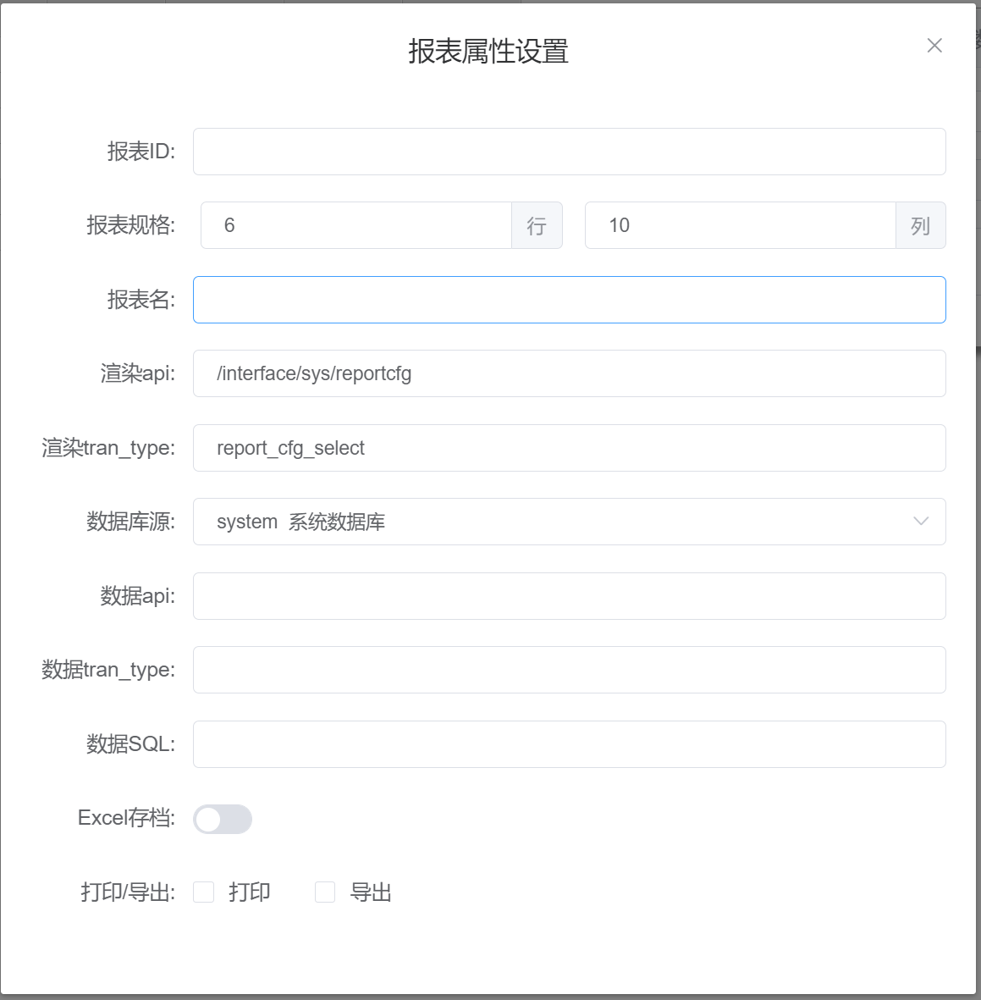

报表属性设置
基本属性

报表 ID
报表保存后自动生成 ID，不可修改。
报表规格
显示当前报表行、列数目。
报表名
当前报表自定义名称。
渲染 api
配合渲染 tran_type 使用，默认 api 为：/interface/sys/reportcfg
渲染 tran_type
报表渲染时执行的交易。交易说明
默认 tran_type 为：report_cfg_select
数据库源
报表数据来源设置，默认使用系统数据库，可选择其他数据库源，数据库源添加可参考数据源管理。数据源管理
数据 api
配合数据 tran_type 使用，默认 api 为：/interface/sys/reportcfg
数据 tran_type
报表数据获取时执行的交易。交易说明
默认 tran_type 为：report_data_show
数据 SQL
与数据 api 和 数据 tran_type 配合使用。
注意：
此处的 SQL 语句应与数据库源对应；
支持多条 SQL 语句，不同 SQL 语句间用 ; 分号(英文)分隔；
支持变量替换和关键字替换，页面中数据变量（包括默认数据变量）可作为自动替换 SQL 语句中对应的标志变量
标志变量写法 $[数据变量名]，SQL 示例：select id,name,age from user where username=$[name]
关键字：${USER_ID} (用户 ID)、${USER_NAME} (用户名)、${TRAN_DATE} (当前日期)、${TRAN_TIME} (当前时间)、${TRAN_DATETIME} (当前日期时间)、${YYYY} (当前年份)、${WEEK} (当年第几周)
Excel 存档
导出 excel 时是否系统留存入档开关。
打印/导出
报表 打印和导出 excel 按钮显示控制开关。